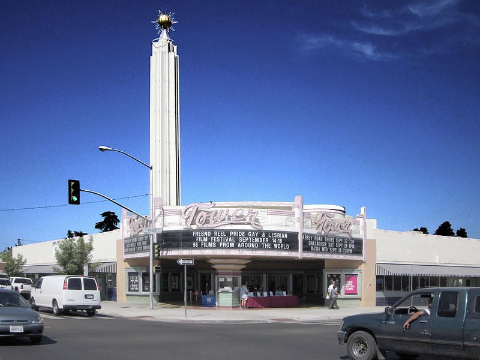
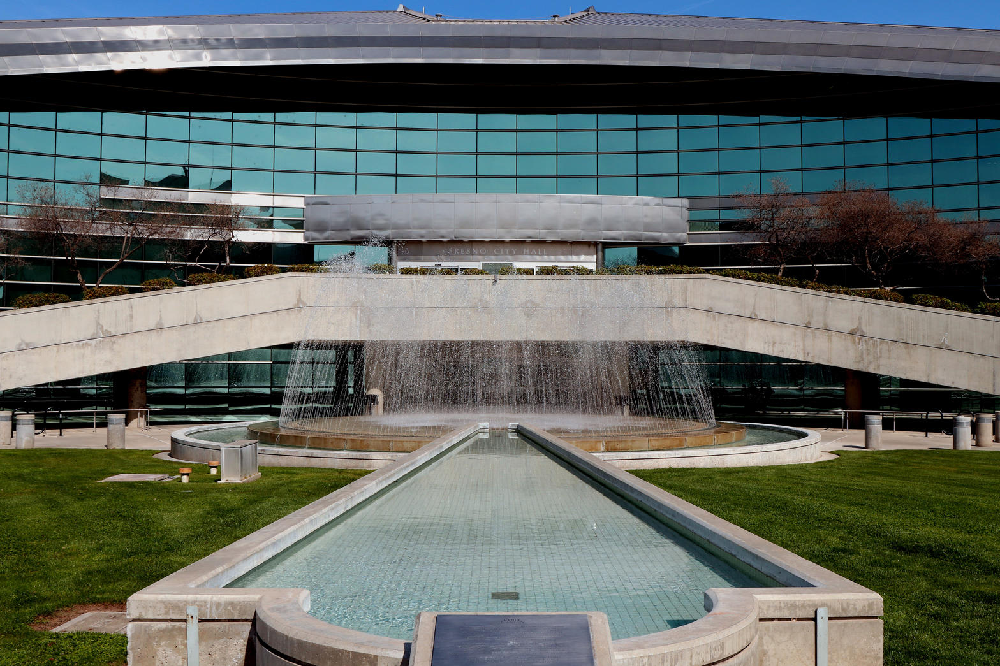
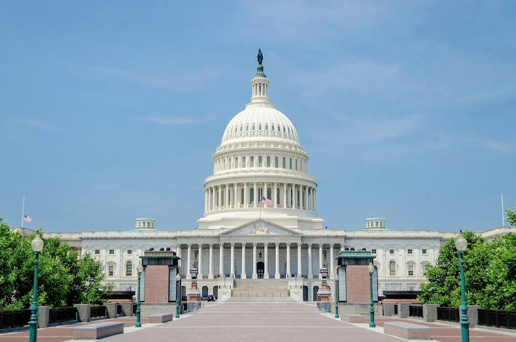

Father, keep this hour inside the written Word and the written law. Do not let us trade a section number for a slogan. Amen.
Isaiah 5:20
What sorrow for those who say that evil is good and good is evil, that dark is light and light is dark, that bitter is sweet and sweet is bitter.
California already wrote the Health and Safety Code. Division 10 names the drugs. Division 13 names the building that endangers life and limb. Division 5 names the waste that becomes a nuisance. The city does not need a workshop to invent a softer word. The violation already has a number.
Two days ago this pulpit took Health and Safety Code section 11395 by itself. That was the treatment-mandated felony. Today the charge is wider. The street is not waiting for 11395. The street is already inside 11350, 11377, 11364, 11550, 17920.3, and 5411. Those are not vibes. They are statutes.
Name the drug sections
Section 11350 makes it a crime to possess listed narcotics without a prescription. Heroin and cocaine live there. Section 11377 covers methamphetamine and the other scheduled stimulants that Prop 47 knocked down to a misdemeanor in 2014. Section 11364 names the pipe and the kit used to inject or smoke the scheduled drug. Section 11550 names the person who is under the influence. No baggie is required for 11550. The body in the doorway is enough if the elements are proved.
Section 11395 is the later door. Two or more qualifying prior drug convictions, then possession of a hard drug as the statute defines it, and the case can be filed as a treatment-mandated felony. Hard drug in that section includes fentanyl, heroin, cocaine, methamphetamine, and PCP. It does not include cannabis. The Judicial Council counted 19,104 felony 11395 filings in the reporting courts for calendar year 2025. In that same table Fresno reported 101 felony 11395 filings and 8 defendants who elected treatment. Statewide, 3,207 of 18,666 reported felony 11395 cases in the 53 courts that tracked the choice involved a person who opted for treatment. That is about 17 percent. The rest of the file did not walk through that door.
In May 2026 Sheriff John Zanoni said county agencies had booked 1,422 people on charges that Prop 36 made bookable again. 848 of those bookings were in the city of Fresno. The District Attorney and the police chief said the same week that retail theft arrests were up and that the prior-conviction tool was being used. Those are public claims from named officers. They are not a promise that every sidewalk in the Tower District is clean.

Name the building and the waste
The drug articles are not the whole code. Section 17920.3 is the State Housing Law definition of a substandard building. Inadequate sanitation. No working toilet. No approved sewage connection. Structural hazards. Infestation. Wiring that can kill. Occupancy of a space that was never designed for living. If those conditions endanger life, limb, health, property, safety, or welfare of occupants or the public, the building is substandard as a matter of state law. A city that receives a complaint about that condition is required to inspect. Fresno also wrote its own vacant-building rules. A vacant commercial shell kept as a fire hazard or a blighted attractive nuisance is already a public nuisance under the municipal code. Occupancy is not allowed until the place meets the health and safety standards required to live in it.
Section 5411 is older and plainer. No person shall discharge sewage or other waste in any manner that results in contamination, pollution, or a nuisance. Waste in that chapter includes substances associated with human habitation. Nuisance in that chapter includes what is injurious to health or indecent or offensive to the senses and that hits a neighborhood, not only one house. A grown man using a tree at a children's park gate as a toilet is not a housing philosophy. It is waste in public. The park can be funded by Measure P and still be a place where 5411 has work to do.

Romans 13:3-4
For the authorities do not strike fear in people who are doing right, but in those who are doing wrong. Would you like to live without fear of the authorities? Do what is right, and they will honor you. The authorities are God’s servants, sent for your good. But if you are doing wrong, of course you should be afraid, for they have the power to punish you. They are God’s servants, sent for the very purpose of punishing those who do what is wrong.
Paul does not baptize a party. He names the magistrate's job. The job is not to invent a noun so the conduct disappears. The job is to punish what is wrong and to leave the person who is doing right unafraid. When a city calls possession a lifestyle, calls an open high a housing status, and calls a dead commercial building an activation opportunity, the magistrate has left Romans 13 and gone into public relations.

Ephesians 5:11-13
Take no part in the worthless deeds of evil and darkness; instead, expose them. It is shameful even to talk about the things that ungodly people do in secret. But their evil intentions will be exposed when the light shines on them.
Expose them means name the section. It does not mean invent a charge against a neighbor you dislike. It does not mean call a private worker a trafficker from a microphone. It means the pipe is 11364, the high is 11550, the bag is 11350 or 11377, the third hard-drug possession with priors is 11395, the dead building is 17920.3, and the waste in the park is 5411. If the elements are not there, keep your mouth shut about that person and keep your eyes on the statute.
Luke 8:17
For all that is secret will eventually be brought into the open, and everything that is concealed will be brought to light and made known to all.
The concealment in this city is often linguistic. Rename the act and you can keep the budget. Keep the section number and you have to decide whether the officer writes the cite. That is the whole fight. Prop 36 did not write a new morality. It put teeth back on conduct the code had already named.
Proverbs 14:34
Godliness makes a nation great, but sin is a disgrace to any people.
A people that will not say 11550 when a man is high in a children's gate has chosen disgrace and called it compassion. A people that will not say 17920.3 when a commercial box has no sanitation and still draws bodies has chosen blight and called it patience. Mercy is real. Mercy starts with the true name. Jesus does not save a metaphor. He saves a sinner whose sin can be spoken.
Micah 6:8
No, O people, the Lord has told you what is good, and this is what he requires of you: to do what is right, to love mercy, and to walk humbly with your God.
Do what is right. Write the section. Love mercy. Offer the treatment door that 11395 already wrote, and offer the Gospel that no code can write. Walk humbly. Do not pretend a sermon is an information. Do not pretend a slogan is a statute.
The Health and Safety Code already named the violation. Say the number. Then stand still long enough for the Lord to name the heart.
In the name of the Father, and of the Son, the Lord Jesus Christ. Amen.
Sources
- Cal. Health and Safety Code sections 11350, 11364, 11377, 11395, 11550, 17920.3, and 5411. Section 11395 added by Proposition 36 (2024), effective December 18, 2024. Hard-drug definition in 11395(e).
- Judicial Council of California, Proposition 36 court data report covering January 1 through December 31, 2025. Statewide felony 11395 filings: 19,104. Fresno row in Table 1: 15 misdemeanor and 101 felony 11395 filings; 8 felony 11395 defendants elected treatment. Treatment election among 53 reporting courts: 3,207 of 18,666 felony 11395 cases (17 percent).
- Fresno County Sheriff John Zanoni, May 8, 2026 public remarks reported by The Fresno Bee and KSEE/KGPE: 1,422 Prop 36-related bookings countywide, 848 in the city of Fresno. Fresno Police Chief Mindy Casto and District Attorney Lisa Smittcamp at the same week's retail-theft briefing.
- State Housing Law, Health and Safety Code section 17910 et seq., and section 17920.3 definition of a substandard building. Fresno Municipal Code Chapter 10, Article 6, vacant-building and public-nuisance abatement standards.
- Prior High Tower sermon on section 11395 alone: "Take Your Pick," September 12, 2026, sermon.ahightower.com/turn-live/.
Photographs
- Fresno City Hall fountain and entrance. Wikimedia Commons, File:Fresno City Hall Fountain.jpg. Public civic exterior.
- Tower Theatre, Olive and Wishon, Tower District. Public facade photograph via Clio entry on the theater.
- United States Capitol exterior from a public approach. Seat of federal power, not a named criminal charge.